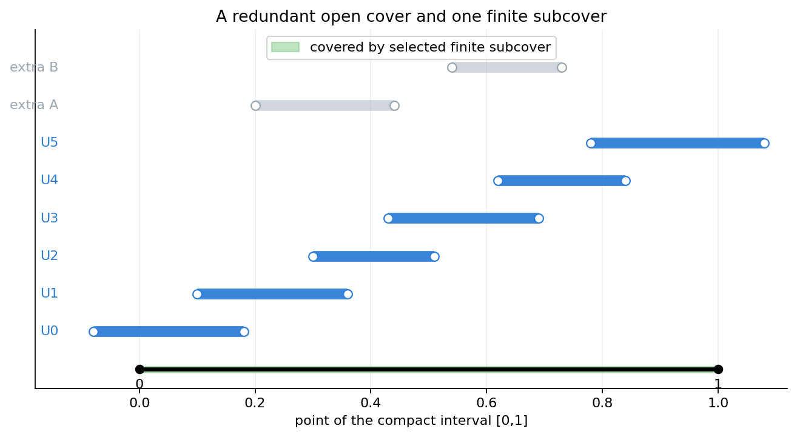
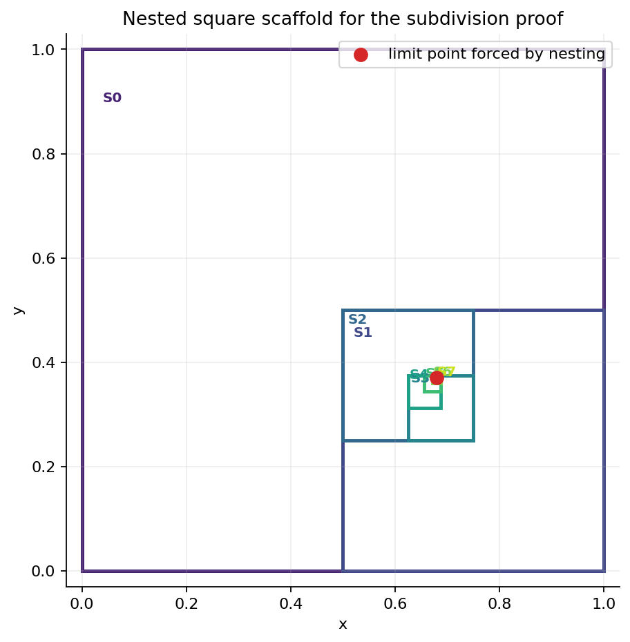
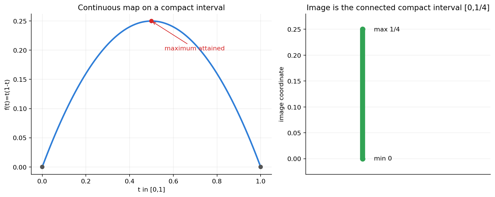
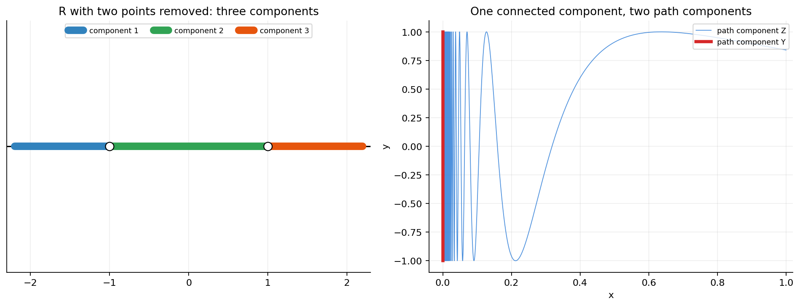
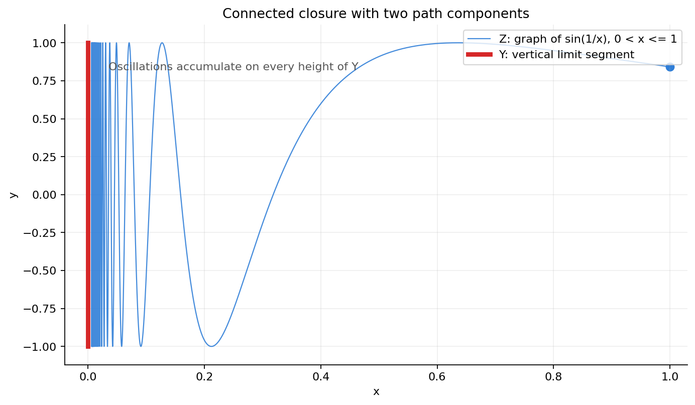
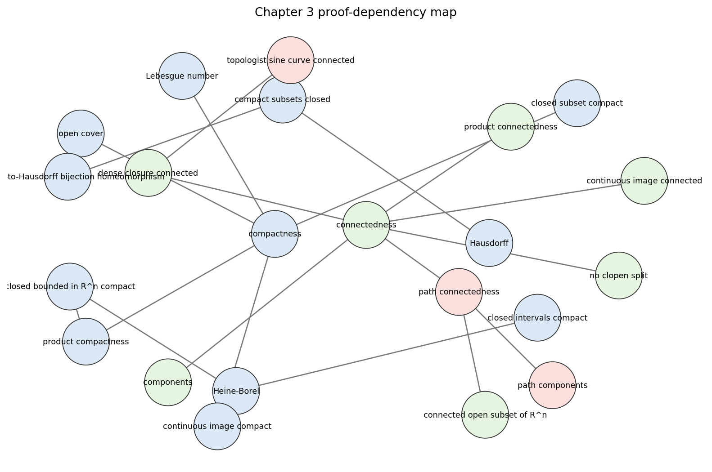

printed pages 43-64; PDF pages 54-75
Compactness and
Connectedness
Local-to-global control through finite subcovers, product strips, closures, components, and paths.
Computational translation. Open-cover statements become finite grid witnesses; limiting proofs become nested-square diagnostics; connectedness is tested by closures, clopen separations, components, and path components.
Basic-Topology/chapter-03-compactness-and-connectedness/03-compactness-and-connectedness.ipynbOpen Covers And Finite Subcovers
../figures/open-cover-finite-subcover.png
The highlighted intervals still cover the sampled compact interval.
An open cover of \(X\) is a family \(\mathcal U\) of open sets with \(X \subseteq \bigcup_{U\in\mathcal U} U\). A finite subcover is a finite subfamily with the same covering property.
- 8 cover elements are available.
- 6 selected intervals cover the grid.
- 2001 grid samples; uncovered samples: 0.
- minimum local cover radius on the grid: 0.03.
Compactness And Heine-Borel
A space \(X\) is compact when every open cover of \(X\) contains a finite subcover.
Every closed interval \([a,b]\subset \mathbb R\) is compact. In Euclidean space, compact subsets are exactly the closed bounded subsets.
Open intervals and unbounded Euclidean sets admit open covers with no finite subcover.
Subdivision Makes A Bad Cover Collapse
nested-square-limit.png and nested-square-diameters.csv
Target point \((0.68,0.37)\); every selected square contains the target.
- Assume an open cover has no finite subcover.
- Subdivide; keep one closed piece still not finitely covered.
- Diameters tend to zero, so the nested pieces meet in one point.
- One open set around that point eventually contains the whole small piece.
| level | side | diameter | contains target |
|---|---|---|---|
| 0 | 1 | 1.4142 | true |
| 1 | 0.5 | 0.7071 | true |
| 4 | 0.0625 | 0.0884 | true |
| 7 | 0.0078125 | 0.0110 | true |
Checked invariant: each post-first diameter ratio equals 0.5. Full table: nested-square-diameters.csv.
Compactness Is A Finite-Control Toolkit
Homeomorphism criterion
A one-to-one, onto, continuous map \(X\to Y\) from compact \(X\) to Hausdorff \(Y\) is a homeomorphism because closed sets have compact images, hence closed images.
Real-valued functions
If \(f:X\to \mathbb R\) is continuous and \(X\) is compact, then \(f(X)\) is closed and bounded in \(\mathbb R\), so \(f\) is bounded and attains its maximum and minimum.
A Continuous Image Keeps Both Controls
../figures/continuous-image-compact-connected.png
The image is a compact connected interval of values.
For \(f(t)=t(1-t)\) on \([0,1]\), continuity sends a compact connected domain to a compact connected image.
Compactness supplies attained extrema; connectedness says no gap can appear between the minimum and maximum values.
The Product Topology
The product topology on \(X\times Y\) has basic opens \(U\times V\), with \(U\subseteq X\) open and \(V\subseteq Y\) open.
The projections \(p_1:X\times Y\to X\) and \(p_2:X\times Y\to Y\) are continuous and open. A map \(g:Z\to X\times Y\) is continuous iff \(p_1g\) and \(p_2g\) are continuous.
\(X\times Y\) is Hausdorff exactly when both factors are Hausdorff.
The Product Of Compact Spaces Is Compact
../html/product-strip-compactness.htmlThe Plotly artifact groups basic rectangles into finitely many base strips.
- Cover one fiber \(\{x\}\times Y\) by finitely many basic rectangles.
- Intersect their \(X\)-coordinates to thicken the fiber to a strip \(U_x\times Y\).
- Use compactness of \(X\) to choose finitely many such strips.
Check file records selected_rectangles_cover_square_grid = true.
Closed And Bounded Sets In \(\mathbb R^n\)
A subset of \(\mathbb R^n\) is compact if and only if it is closed and bounded.
Compact subsets of Euclidean space are closed by Hausdorff separation and bounded because finitely many origin-centered integer balls cover them.
If \(C\) is closed and bounded, then \(C\subset[-s,s]^n\). The box is compact by Heine-Borel plus finite product compactness, and \(C\) is a closed subset of it.
Connectedness Means No Separation
A space \(X\) is connected if every decomposition \(X=A\cup B\) into nonempty subsets satisfies \(\overline A\cap B\neq\varnothing\) or \(A\cap\overline B\neq\varnothing\).
- Only \(X\) and \(\varnothing\) are both open and closed.
- No union of two disjoint nonempty open sets equals \(X\).
- No onto continuous map \(X\to D\) exists for a discrete \(D\) with more than one point.
Connected Subsets Of \(\mathbb R\) Are Intervals
A nonempty subset \(S\subseteq\mathbb R\) is connected if and only if it is an interval: whenever \(a,b\in S\) and \(a<p<b\), then \(p\in S\).
If a point \(p\) is missing between two points of \(S\), the left part and right part are separated. For an interval, a supremum argument prevents such a separation.
Teaching check. The intermediate value theorem is the continuous-image version: the image of an interval is again an interval.
Connectedness Has Stable Constructions
Images
Onto continuous maps send connected spaces to connected spaces.
Dense Closures
If \(Z\) is connected and dense in \(X\), then \(X\) is connected.
Unions
A cover by connected pieces is connected when no two pieces are separated.
Products
If \(X\) and \(Y\) are connected, then \(X\times Y\) is connected.
For each \((x,y)\), the union \((\{x\}\times Y)\cup(X\times\{y\})\) is connected. These cross-shaped connected sets overlap enough to cover all of \(X\times Y\).
Components And Path Components
../figures/components-and-path-components.png
Notebook model compares components with path components.
A component is a maximal connected subset. Components are closed, and distinct components are separated from one another.
A path component is a maximal path-connected subset. It lies inside a component, but it need not be closed or separated from other path components.
Path Connectedness Is Stronger
A path in \(X\) is a continuous map \(\gamma:[0,1]\to X\). A space is path connected when every pair of points can be joined by a path.
Path connected spaces are connected. A connected, locally path-connected space is path connected; open connected subsets of Euclidean space are the chapter's main example.
Local connectedness and local path connectedness ask for arbitrarily small connected or path-connected neighborhoods. The sine curve shows why this extra local condition matters.
The Topologist Sine Curve
../figures/topologist-sine-curve.png
The graph accumulates on every point of the vertical segment.
\(Z=\{(x,\sin(1/x)):0<x\le 1\}\), \(Y=\{(0,y):-1\le y\le 1\}\), and \(X=Y\cup Z\).
\(Z\) is connected as a continuous image of \((0,1]\). Its closure is \(X\), so closure stability makes \(X\) connected.
A path beginning on \(Y\) cannot enter the oscillating graph \(Z\); locally the pieces near the axis are separated inside small disks.
Chapter 3 In One Dependency Graph
../figures/chapter03-proof-dependency-map.png
- Open covers are the language of compactness.
- Heine-Borel, products, and closed subsets convert topology back to Euclidean geometry.
- Connectedness is a no-separation property stable under images, closures, unions, and products.
- Path connectedness implies connectedness, but the sine curve blocks the converse.